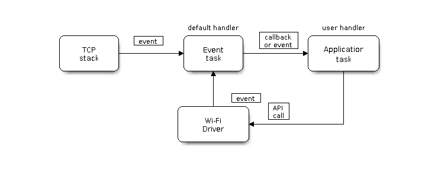

Overview
ESP32-C3 Wi-Fi Feature List
The following features are supported:
4 virtual Wi-Fi interfaces, which are STA, AP, Sniffer and reserved
Station-only mode, AP-only mode, station/AP-coexistence mode
IEEE 802.11b, IEEE 802.11g, IEEE 802.11n, and APIs to configure the protocol mode
WPA/WPA2/WPA3/WPA2-Enterprise/WPA3-Enterprise/WAPI/WPS and DPP
AMSDU, AMPDU, HT40, QoS, and other key features
Modem-sleep
The Espressif-specific ESP-NOW protocol and Long Range mode, which supports up to 1 km of data traffic
Up to 20 MBit/s TCP throughput and 30 MBit/s UDP throughput over the air
Sniffer
Both fast scan and all-channel scan
Multiple antennas
Channel state information
How To Write a Wi-Fi Application
Preparation
Generally, the most effective way to begin your own Wi-Fi application is to select an example which is similar to your own application, and port the useful part into your project. It is not a MUST, but it is strongly recommended that you take some time to read this article first, especially if you want to program a robust Wi-Fi application.
This article is supplementary to the Wi-Fi APIs/Examples. It describes the principles of using the Wi-Fi APIs, the limitations of the current Wi-Fi API implementation, and the most common pitfalls in using Wi-Fi. This article also reveals some design details of the Wi-Fi driver. We recommend you to select an example .
wifi/getting_started/station demonstrates how to use the station functionality to connect to an AP.
wifi/getting_started/softAP demonstrates how to use the SoftAP functionality to configure ESP32-C3 as an AP.
wifi/scan demonstrates how to scan for available APs, configure the scan settings, and display the scan results.
wifi/fast_scan demonstrates how to perform fast and all channel scans for nearby APs, set thresholds for signal strength and authentication modes, and connect to the best fitting AP based on signal strength and authentication mode.
wifi/wps demonstrates how to use the WPS enrollee feature to simplify the process of connecting to a Wi-Fi router, with options for PIN or PBC modes.
wifi/wps_softap_registrar demonstrates how to use the WPS registrar feature on SoftAP mode, simplifying the process of connecting to a Wi-Fi SoftAP from a station.
wifi/smart_config demonstrates how to use the smartconfig feature to connect to a target AP using the ESPTOUCH app.
wifi/power_save demonstrates how to use the power save mode in station mode.
wifi/softap_sta demonstrates how to configure ESP32-C3 to function as both an AP and a station simultaneously, effectively enabling it to act as a Wi-Fi NAT router.
wifi/iperf demonstrates how to implement the protocol used by the iPerf performance measurement tool, allowing for performance measurement between two chips or between a single chip and a computer running the iPerf tool, with specific instructions for testing station/soft-AP TCP/UDP RX/TX throughput.
wifi/roaming/roaming_app demonstrates how to use the Wi-Fi Roaming App functionality to efficiently roam between compatible APs.
wifi/roaming/roaming_11kvr demonstrates how to implement roaming using 11k and 11v APIs.
Setting Wi-Fi Compile-time Options
Refer to Wi-Fi Menuconfig.
Init Wi-Fi
Refer to ESP32-C3 Wi-Fi Station General Scenario and ESP32-C3 Wi-Fi AP General Scenario.
Start/Connect Wi-Fi
Refer to ESP32-C3 Wi-Fi Station General Scenario and ESP32-C3 Wi-Fi AP General Scenario.
Event-Handling
Generally, it is easy to write code in "sunny-day" scenarios, such as WIFI_EVENT_STA_START and WIFI_EVENT_STA_CONNECTED. The hard part is to write routines in "rainy-day" scenarios, such as WIFI_EVENT_STA_DISCONNECTED. Good handling of "rainy-day" scenarios is fundamental to robust Wi-Fi applications. Refer to ESP32-C3 Wi-Fi Event Description, ESP32-C3 Wi-Fi Station General Scenario, and ESP32-C3 Wi-Fi AP General Scenario. See also the overview of the Event Loop Library in ESP-IDF.
Write Error-Recovery Routines Correctly at All Times
Just like the handling of "rainy-day" scenarios, a good error-recovery routine is also fundamental to robust Wi-Fi applications. Refer to ESP32-C3 Wi-Fi API Error Code.
ESP32-C3 Wi-Fi API Error Code
All of the ESP32-C3 Wi-Fi APIs have well-defined return values, namely, the error code. The error code can be categorized into:
No errors, e.g.,
ESP_OKmeans that the API returns successfully.Recoverable errors, such as
ESP_ERR_NO_MEM.Non-recoverable, non-critical errors.
Non-recoverable, critical errors.
Whether the error is critical or not depends on the API and the application scenario, and it is defined by the API user.
The primary principle to write a robust application with Wi-Fi API is to always check the error code and write the error-handling code. Generally, the error-handling code can be used:
For recoverable errors, in which case you can write a recoverable-error code. For example, when
esp_wifi_start()returnsESP_ERR_NO_MEM, the recoverable-error code vTaskDelay can be called in order to get a microseconds' delay for another try.For non-recoverable, yet non-critical errors, in which case printing the error code is a good method for error handling.
For non-recoverable and also critical errors, in which case "assert" may be a good method for error handling. For example, if
esp_wifi_set_mode()returnsESP_ERR_WIFI_NOT_INIT, it means that the Wi-Fi driver is not initialized byesp_wifi_init()successfully. You can detect this kind of error very quickly in the application development phase.
In esp_common/include/esp_err.h, ESP_ERROR_CHECK checks the return values. It is a rather commonplace error-handling code and can be used as the default error-handling code in the application development phase. However, it is strongly recommended that API users write their own error-handling code.
ESP32-C3 Wi-Fi API Parameter Initialization
When initializing struct parameters for the API, one of two approaches should be followed:
Explicitly set all fields of the parameter.
Use get API to get current configuration first, then set application specific fields.
Initializing or getting the entire structure is very important, because most of the time the value 0 indicates that the default value is used. More fields may be added to the struct in the future and initializing these to zero ensures the application will still work correctly after ESP-IDF is updated to a new release.
ESP32-C3 Wi-Fi Programming Model
The ESP32-C3 Wi-Fi programming model is depicted as follows:

Wi-Fi Programming Model
The Wi-Fi driver can be considered a black box that knows nothing about high-layer code, such as the TCP/IP stack, application task, and event task. The application task (code) generally calls Wi-Fi driver APIs to initialize Wi-Fi and handles Wi-Fi events when necessary. Wi-Fi driver receives API calls, handles them, and posts events to the application.
Wi-Fi event handling is based on the esp_event library. Events are sent by the Wi-Fi driver to the default event loop. Application may handle these events in callbacks registered using esp_event_handler_register(). Wi-Fi events are also handled by esp_netif component to provide a set of default behaviors. For example, when Wi-Fi station connects to an AP, esp_netif will automatically start the DHCP client by default.
ESP32-C3 Wi-Fi Event Description
WIFI_EVENT_WIFI_READY
The Wi-Fi driver will never generate this event, which, as a result, can be ignored by the application event callback. This event may be removed in future releases.
WIFI_EVENT_SCAN_DONE
The scan-done event is triggered by esp_wifi_scan_start() and will arise in the following scenarios:
The scan is completed, e.g., the target AP is found successfully, or all channels have been scanned.
The scan is stopped by
esp_wifi_scan_stop().The
esp_wifi_scan_start()is called before the scan is completed. A new scan will override the current scan and a scan-done event will be generated.
The scan-done event will not arise in the following scenarios:
It is a blocked scan.
The scan is caused by
esp_wifi_connect().
Upon receiving this event, the event task does nothing. The application event callback needs to call esp_wifi_scan_get_ap_num() and esp_wifi_scan_get_ap_records() to fetch the scanned AP list and trigger the Wi-Fi driver to free the internal memory which is allocated during the scan (do not forget to do this!).
Refer to ESP32-C3 Wi-Fi Scan for a more detailed description.
WIFI_EVENT_STA_START
If esp_wifi_start() returns ESP_OK and the current Wi-Fi mode is station or station/AP, then this event will arise. Upon receiving this event, the event task will initialize the LwIP network interface (netif). Generally, the application event callback needs to call esp_wifi_connect() to connect to the configured AP.
WIFI_EVENT_STA_STOP
If esp_wifi_stop() returns ESP_OK and the current Wi-Fi mode is station or station/AP, then this event will arise. Upon receiving this event, the event task will release the station's IP address, stop the DHCP client, remove TCP/UDP-related connections, and clear the LwIP station netif, etc. The application event callback generally does not need to do anything.
WIFI_EVENT_STA_CONNECTED
If esp_wifi_connect() returns ESP_OK and the station successfully connects to the target AP, the connection event will arise. Upon receiving this event, the event task starts the DHCP client and begins the DHCP process of getting the IP address. Then, the Wi-Fi driver is ready for sending and receiving data. This moment is good for beginning the application work, provided that the application does not depend on LwIP, namely the IP address. However, if the application is LwIP-based, then you need to wait until the got ip event comes in.
WIFI_EVENT_STA_DISCONNECTED
This event can be generated in the following scenarios:
When
esp_wifi_disconnect()oresp_wifi_stop()is called and the station is already connected to the AP.When
esp_wifi_connect()is called, but the Wi-Fi driver fails to set up a connection with the AP due to certain reasons, e.g., the scan fails to find the target AP or the authentication times out. If there are more than one AP with the same SSID, the disconnected event will be raised after the station fails to connect all of the found APs.When the Wi-Fi connection is disrupted because of specific reasons, e.g., the station continuously loses N beacons, the AP kicks off the station, or the AP's authentication mode is changed.
Upon receiving this event, the default behaviors of the event task are:
Shutting down the station's LwIP netif.
Notifying the LwIP task to clear the UDP/TCP connections which cause the wrong status to all sockets. For socket-based applications, the application callback can choose to close all sockets and re-create them, if necessary, upon receiving this event.
The most common event handle code for this event in application is to call esp_wifi_connect() to reconnect the Wi-Fi. However, if the event is raised because esp_wifi_disconnect() is called, the application should not call esp_wifi_connect() to reconnect. It is the application's responsibility to distinguish whether the event is caused by esp_wifi_disconnect() or other reasons. Sometimes a better reconnection strategy is required. Refer to Wi-Fi Reconnect and Scan When Wi-Fi Is Connecting.
Another thing that deserves attention is that the default behavior of LwIP is to abort all TCP socket connections on receiving the disconnect. In most cases, it is not a problem. However, for some special applications, this may not be what they want. Consider the following scenarios:
The application creates a TCP connection to maintain the application-level keep-alive data that is sent out every 60 seconds.
Due to certain reasons, the Wi-Fi connection is cut off, and the WIFI_EVENT_STA_DISCONNECTED is raised. According to the current implementation, all TCP connections will be removed and the keep-alive socket will be in a wrong status. However, since the application designer believes that the network layer should ignore this error at the Wi-Fi layer, the application does not close the socket.
Five seconds later, the Wi-Fi connection is restored because
esp_wifi_connect()is called in the application event callback function. Moreover, the station connects to the same AP and gets the same IPV4 address as before.Sixty seconds later, when the application sends out data with the keep-alive socket, the socket returns an error and the application closes the socket and re-creates it when necessary.
In above scenarios, ideally, the application sockets and the network layer should not be affected, since the Wi-Fi connection only fails temporarily and recovers very quickly.
IP_EVENT_STA_GOT_IP
This event arises when the DHCP client successfully gets the IPV4 address from the DHCP server, or when the IPV4 address is changed. The event means that everything is ready and the application can begin its tasks (e.g., creating sockets).
The IPV4 may be changed because of the following reasons:
The DHCP client fails to renew/rebind the IPV4 address, and the station's IPV4 is reset to 0.
The DHCP client rebinds to a different address.
The static-configured IPV4 address is changed.
Whether the IPV4 address is changed or not is indicated by the field ip_change of ip_event_got_ip_t.
The socket is based on the IPV4 address, which means that, if the IPV4 changes, all sockets relating to this IPV4 will become abnormal. Upon receiving this event, the application needs to close all sockets and recreate the application when the IPV4 changes to a valid one.
IP_EVENT_GOT_IP6
This event arises when the IPV6 SLAAC support auto-configures an address for the ESP32-C3, or when this address changes. The event means that everything is ready and the application can begin its tasks, e.g., creating sockets.
IP_EVENT_STA_LOST_IP
This event arises when the IPV4 address becomes invalid.
IP_EVENT_STA_LOST_IP does not arise immediately after the Wi-Fi disconnects. Instead, it starts an IPV4 address lost timer (configurable via CONFIG_ESP_NETIF_LOST_IP_TIMER_ENABLE and CONFIG_ESP_NETIF_IP_LOST_TIMER_INTERVAL). If the IPV4 address is got before the timer expires, IP_EVENT_STA_LOST_IP does not happen. Otherwise, the event arises when the IPV4 address lost timer expires.
Generally, the application can ignore this event, because it is just a debug event to inform that the IPV4 address is lost.
WIFI_EVENT_AP_START
Similar to WIFI_EVENT_STA_START.
WIFI_EVENT_AP_STOP
Similar to WIFI_EVENT_STA_STOP.
WIFI_EVENT_AP_STACONNECTED
Every time a station is connected to ESP32-C3 AP, the WIFI_EVENT_AP_STACONNECTED will arise. Upon receiving this event, the event task will do nothing, and the application callback can also ignore it. However, you may want to do something, for example, to get the info of the connected STA.
WIFI_EVENT_AP_STADISCONNECTED
This event can happen in the following scenarios:
The application calls
esp_wifi_disconnect(), oresp_wifi_deauth_sta(), to manually disconnect the station.The Wi-Fi driver kicks off the station, e.g., because the AP has not received any packets in the past five minutes. The time can be modified by
esp_wifi_set_inactive_time().The station kicks off the AP.
When this event happens, the event task will do nothing, but the application event callback needs to do something, e.g., close the socket which is related to this station.
WIFI_EVENT_AP_PROBEREQRECVED
This event is disabled by default. The application can enable it via API esp_wifi_set_event_mask().
When this event is enabled, it will be raised each time the AP receives a probe request.
WIFI_EVENT_STA_BEACON_TIMEOUT
If the station does not receive the beacon of the connected AP within the inactive time, the beacon timeout happens, the WIFI_EVENT_STA_BEACON_TIMEOUT will arise. The application can set inactive time via API esp_wifi_set_inactive_time().
WIFI_EVENT_CONNECTIONLESS_MODULE_WAKE_INTERVAL_START
The WIFI_EVENT_CONNECTIONLESS_MODULE_WAKE_INTERVAL_START will arise at the start of connectionless module Interval. See connectionless module power save.
ESP32-C3 Wi-Fi Configuration
All configurations will be stored into flash when the Wi-Fi NVS is enabled; otherwise, refer to Wi-Fi NVS Flash.
Wi-Fi Mode
Call esp_wifi_set_mode() to set the Wi-Fi mode.
Mode |
Description |
|---|---|
|
NULL mode: in this mode, the internal data struct is not allocated to the station and the AP, while both the station and AP interfaces are not initialized for RX/TX Wi-Fi data. Generally, this mode is used for Sniffer, or when you only want to stop both the station and the AP without calling |
|
Station mode: in this mode, |
|
AP mode: in this mode, |
|
Station/AP coexistence mode: in this mode, |
Station Basic Configuration
API esp_wifi_set_config() can be used to configure the station. And the configuration will be stored in NVS. The table below describes the fields in detail.
Field |
Description |
|---|---|
ssid |
This is the SSID of the target AP, to which the station wants to connect. |
password |
Password of the target AP. |
scan_method |
For |
bssid_set |
If bssid_set is 0, the station connects to the AP whose SSID is the same as the field “ssid”, while the field “bssid” is ignored. In all other cases, the station connects to the AP whose SSID is the same as the “ssid” field, while its BSSID is the same the “bssid” field . |
bssid |
This is valid only when bssid_set is 1; see field “bssid_set”. |
channel |
If the channel is 0, the station scans the channel 1 ~ N to search for the target AP; otherwise, the station starts by scanning the channel whose value is the same as that of the “channel” field, and then scans the channel 1 ~ N but skip the specific channel to find the target AP. For example, if the channel is 3, the scan order will be 3, 1, 2, 4,..., N. If you do not know which channel the target AP is running on, set it to 0. |
sort_method |
This field is only for If the sort_method is If the sort_method is |
threshold |
The threshold is used to filter the found AP. If the RSSI or security mode is less than the configured threshold, the AP will be discarded. If the RSSI is set to 0, it means the default threshold is used, and the default RSSI threshold is -127 dBm. If the authmode threshold is set to 0, it means the default threshold is used, and the default authmode threshold is |
Attention
WEP and TKIP are deprecated in IEEE 802.11-2016 and should not be used. To make the station connect only to APs with WPA2 or higher security, set wifi_config_t.sta.threshold.authmode to WIFI_AUTH_WPA2_PSK. APs below this threshold, such as OPEN, WEP, and WPA-PSK, will be ignored during connection filtering.
AP Basic Configuration
API esp_wifi_set_config() can be used to configure the AP. And the configuration will be stored in NVS. The table below describes the fields in detail.
Field |
Description |
|---|---|
ssid |
SSID of AP; if the ssid[0] is 0xFF and ssid[1] is 0xFF, the AP defaults the SSID to |
password |
Password of AP; if the auth mode is |
ssid_len |
Length of SSID; if ssid_len is 0, check the SSID until there is a termination character. If ssid_len > 32, change it to 32; otherwise, set the SSID length according to ssid_len. |
channel |
Channel of AP; set to 0 for auto selection (min channel: typically 1 for 2.4G). Other invalid values return |
authmode |
Auth mode of ESP AP; currently, ESP AP does not support AUTH_WEP. If the authmode is an invalid value, AP defaults the value to |
ssid_hidden |
If ssid_hidden is 1, AP does not broadcast the SSID; otherwise, it does broadcast the SSID. |
max_connection |
The max number of stations allowed to connect in. ESP32-C3 supports up to 15 ( |
beacon_interval |
Beacon interval; the value is 100 ~ 60000 ms, with default value being 100 ms. If the value is out of range, AP defaults it to 100 ms. |
Wi-Fi Protocol Mode
Currently, the ESP-IDF supports the following protocol modes:
Protocol Mode |
Description |
|---|---|
802.11b |
Call |
802.11bg |
Call |
802.11g |
Call |
802.11bgn |
Call |
802.11gn |
Call |
802.11 BGNLR |
Call |
802.11 LR |
Call This mode is an Espressif-patented mode which can achieve a one-kilometer line of sight range. Please make sure both the station and the AP are connected to an ESP device. |
Wi-Fi Bandwidth Mode
ESP32-C3 currently supports 20 MHz and 40 MHz bandwidth modes, which are used in combination with protocol modes. Common combinations include:
HT20: 802.11n with 20 MHz bandwidth
HT40: 802.11n with 40 MHz bandwidth
Note
The 40 MHz bandwidth mode is only supported in 802.11n mode.
Applications can use the esp_wifi_set_bandwidth() API to set the bandwidth mode of the current interface.
Example:
// Set STA interface protocol to 802.11bgn
uint8_t protocol = WIFI_PROTOCOL_11B | WIFI_PROTOCOL_11G | WIFI_PROTOCOL_11N;
esp_wifi_set_protocol(WIFI_IF_STA, protocol);
// Set STA interface bandwidth to 40 MHz
esp_wifi_set_bandwidth(WIFI_IF_STA, WIFI_BW40);
Long Range (LR)
Long Range (LR) mode is an Espressif-patented Wi-Fi mode which can achieve a one-kilometer line of sight range. Compared to the traditional 802.11b mode, it has better reception sensitivity, stronger anti-interference ability, and longer transmission distance.
LR Compatibility
Since LR is an Espressif-unique Wi-Fi mode operating on the 2.4 GHz band, only ESP32-series chips (excluding the ESP32-C2) support LR data transmission and reception. To ensure compatibility, the ESP32 devices should NOT use LR data rates when connected to non-LR-capable devices. This can be enforced by configuring the appropriate Wi-Fi mode:
If the negotiated mode supports LR, ESP32 devices may transmit data at LR rates.
Otherwise, they must default to traditional Wi-Fi data rates.
The following table depicts the Wi-Fi mode negotiation on 2.4 GHz band:
APSTA |
BGN |
BG |
B |
BGNLR |
BGLR |
BLR |
LR |
|---|---|---|---|---|---|---|---|
BGN |
BGN |
BG |
B |
BGN |
BG |
B |
|
BG |
BG |
BG |
B |
BG |
BG |
B |
|
B |
B |
B |
B |
B |
B |
B |
|
BGNLR |
BGNLR |
BGLR |
BLR |
LR |
|||
BGLR |
BGLR |
BGLR |
BLR |
LR |
|||
BLR |
BLR |
BLR |
BLR |
LR |
|||
LR |
LR |
LR |
LR |
LR |
In the above table, the row is the Wi-Fi mode of AP and the column is the Wi-Fi mode of station. The "-" indicates Wi-Fi mode of the AP and station are not compatible.
According to the table, the following conclusions can be drawn:
For LR-enabled AP of ESP32-C3, it is incompatible with traditional 802.11 mode, because the beacon is sent in LR mode.
For LR-enabled station of ESP32-C3 whose mode is NOT LR-only mode, it is compatible with traditional 802.11 mode.
If both station and AP are ESP32 series chips devices (except ESP32-C2) and both of them have enabled LR mode, the negotiated mode supports LR.
If the negotiated Wi-Fi mode supports both traditional 802.11 mode and LR mode, it is the Wi-Fi driver's responsibility to automatically select the best data rate in different Wi-Fi modes and the application can ignore it.
LR Impacts to Traditional Wi-Fi Device
The data transmission in LR rate has no impacts on the traditional Wi-Fi device because:
The CCA and backoff process in LR mode are consistent with 802.11 specification.
The traditional Wi-Fi device can detect the LR signal via CCA and do backoff.
In other words, the transmission impact in LR mode is similar to that in 802.11b mode.
LR Transmission Distance
The reception sensitivity gain of LR is about 4 dB larger than that of the traditional 802.11b mode. Theoretically, the transmission distance is about 2 to 2.5 times the distance of 11B.
LR Throughput
The LR rate has very limited throughput, because the raw PHY data rate LR is 1/2 Mbps and 1/4 Mbps.
When to Use LR
The general conditions for using LR are:
Both the AP and station are Espressif devices.
Long distance Wi-Fi connection and data transmission is required.
Data throughput requirements are very small, such as remote device control.
Wi-Fi Country Code
Call esp_wifi_set_country() to set the country info. The table below describes the fields in detail. Please consult local 2.4 GHz RF operating regulations before configuring these fields.
Field |
Description |
|---|---|
cc[3] |
Country code string. This attribute identifies the country or noncountry entity in which the station/AP is operating. If it is a country, the first two octets of this string is the two-character country info as described in the document ISO/IEC3166-1. The third octet is one of the following:
|
schan |
Start channel. It is the minimum channel number of the regulations under which the station/AP can operate. |
nchan |
Total number of channels as per the regulations. For example, if the schan=1, nchan=13, then the station/AP can send data from channel 1 to 13. |
policy |
Country policy. This field controls which country info will be used if the configured country info is in conflict with the connected AP’s. For more details on related policies, see the following section. |
The default country info is:
wifi_country_t config = {
.cc = "01",
.schan = 1,
.nchan = 11,
.policy = WIFI_COUNTRY_POLICY_AUTO,
};
If the Wi-Fi Mode is station/AP coexist mode, they share the same configured country info. Sometimes, the country info of AP, to which the station is connected, is different from the country info of configured. For example, the configured station has country info:
wifi_country_t config = {
.cc = "JP",
.schan = 1,
.nchan = 14,
.policy = WIFI_COUNTRY_POLICY_AUTO,
};
but the connected AP has country info:
wifi_country_t config = {
.cc = "CN",
.schan = 1,
.nchan = 13,
;
then country info of connected AP's is used.
The following table depicts which country info is used in different Wi-Fi modes and different country policies, and it also describes the impact on active scan.
Wi-Fi Mode |
Policy |
Description |
|---|---|---|
Station |
WIFI_COUNTRY_POLICY_AUTO |
If the connected AP has country IE in its beacon, the country info equals to the country info in beacon. Otherwise, use the default country info. For scan:
Always keep in mind that if an AP with hidden SSID and station is set to a passive scan channel, the passive scan will not find it. In other words, if the application hopes to find the AP with hidden SSID in every channel, the policy of country info should be configured to WIFI_COUNTRY_POLICY_MANUAL. |
Station |
WIFI_COUNTRY_POLICY_MANUAL |
Always use the configured country info. For scan:
|
AP |
WIFI_COUNTRY_POLICY_AUTO |
Always use the configured country info. |
AP |
WIFI_COUNTRY_POLICY_MANUAL |
Always use the configured country info. |
Station/AP-coexistence |
WIFI_COUNTRY_POLICY_AUTO |
Station: Same as station mode with policy WIFI_COUNTRY_POLICY_AUTO. AP: If the station does not connect to any external AP, the AP uses the configured country info. If the station connects to an external AP, the AP has the same country info as the station. |
Station/AP-coexistence |
WIFI_COUNTRY_POLICY_MANUAL |
Station: Same as station mode with policy WIFI_COUNTRY_POLICY_MANUAL. AP: Same as AP mode with policy WIFI_COUNTRY_POLICY_MANUAL. |
Home Channel
In AP mode, the home channel is defined as the AP channel. In station mode, home channel is defined as the channel of AP which the station is connected to. In station/AP-coexistence mode, the home channel of AP and station must be the same, and if they are different, the station's home channel is always in priority. For example, assume that the AP is on channel 6, and the station connects to an AP whose channel is 9. Since the station's home channel has higher priority, the AP needs to switch its channel from 6 to 9 to make sure that it has the same home channel as the station. While switching channel, the ESP32-C3 in AP mode will notify the connected stations about the channel migration using a Channel Switch Announcement (CSA). Station that supports channel switching will transit without disconnecting and reconnecting to the AP.
Troubleshooting
Please refer to a separate document with Espressif Wireshark User Guide.